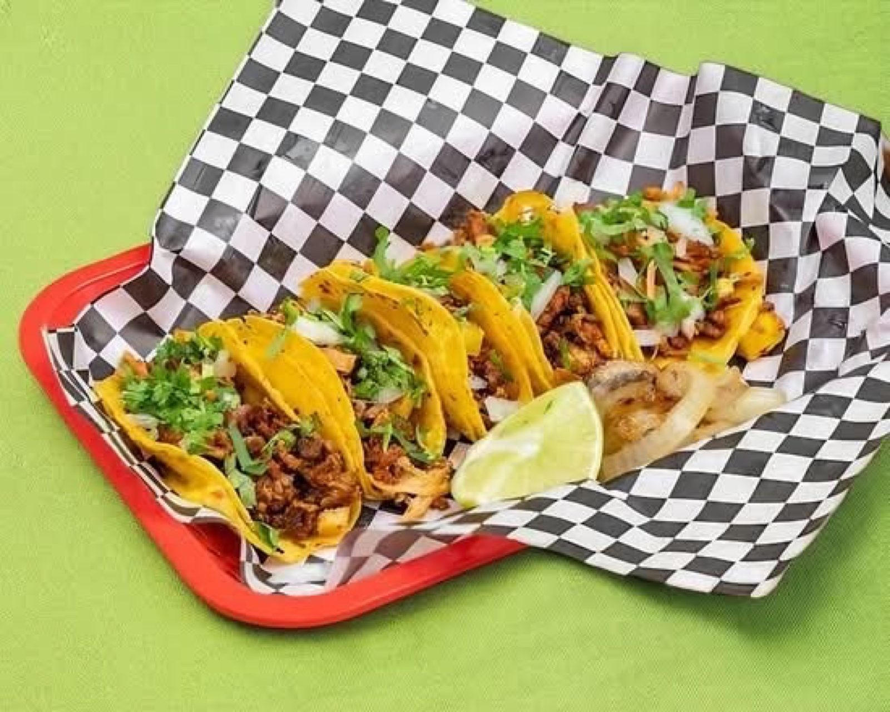

Burritos
Al pastor burritos with the spice just right.
Tacos · San Antonio, TX
Pastor, asada and chorizo tacos, burritos and tortas, with a self serve salsa bar.

Al pastor burritos, loaded chicken fries with orange sauce, tortas and campechanos with pineapple.
Al pastor burritos with the spice just right.

Big enough to share. Pick up a bag for the whole crew.

Loaded chicken fries doused in orange sauce, plus self serve salsas.


4.8 341 Google reviews
The best most amazing tacos in all of San Antonio. I would recommend their campechanos - the pineapple gives it so much flavor. Their customer service is always the best. We have been coming here for years - since they had their food truck, before they opened their restaurant. It is also very clean. I cannot recommend this place enough 10000/10.
We came into SA for a weekend and stumbled upon this hidden gem by accident. Delicious food, reasonably priced, generous servings, and lovely employees. I got mini tacos my husband got a burrito, the next day we just had to go back so we picked up food for our entire fam and we tried the tortas as well. Everything was delicious. Can’t wait to return to SA and visit this place again
Just wow! Truly enjoyed first experience here! The owner and cooks were very friendly, patient, and helpful with the menu. They shared some Spanish with my 8 year old making her feel like a preferred customer. Once ordered, it took about 10-12 minutes to receive it. The food was delicious and they served generous portions. I’m going to revisit soon. If you’re in the area, stopping by won’t be a mistake!

It started as an orange food truck. Now the restaurant has a red roof on El Sendero Street.
Friendly owner and cooks, patient with the menu. Still smiling when you walk in right before closing.
13131 El Sendero St, San Antonio, TX 78233
Open Wednesday to Sunday from 4 PM. Closed Monday and Tuesday. A little hidden, so use the map.